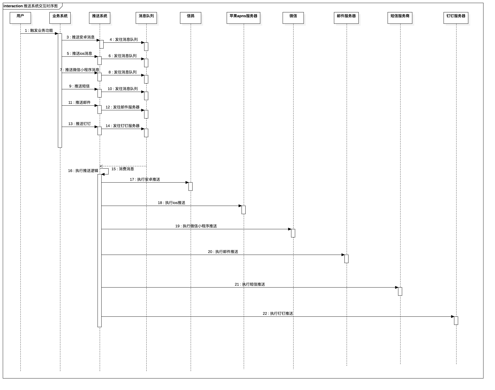
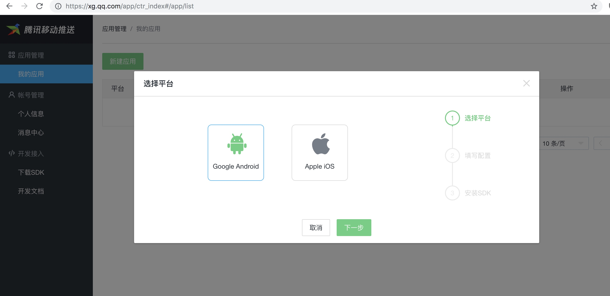
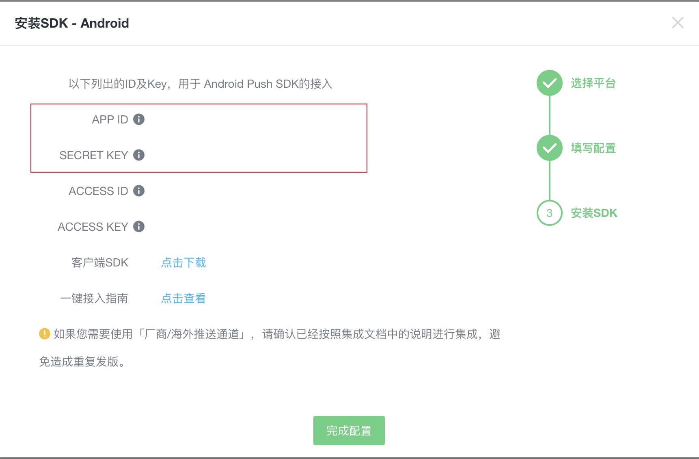
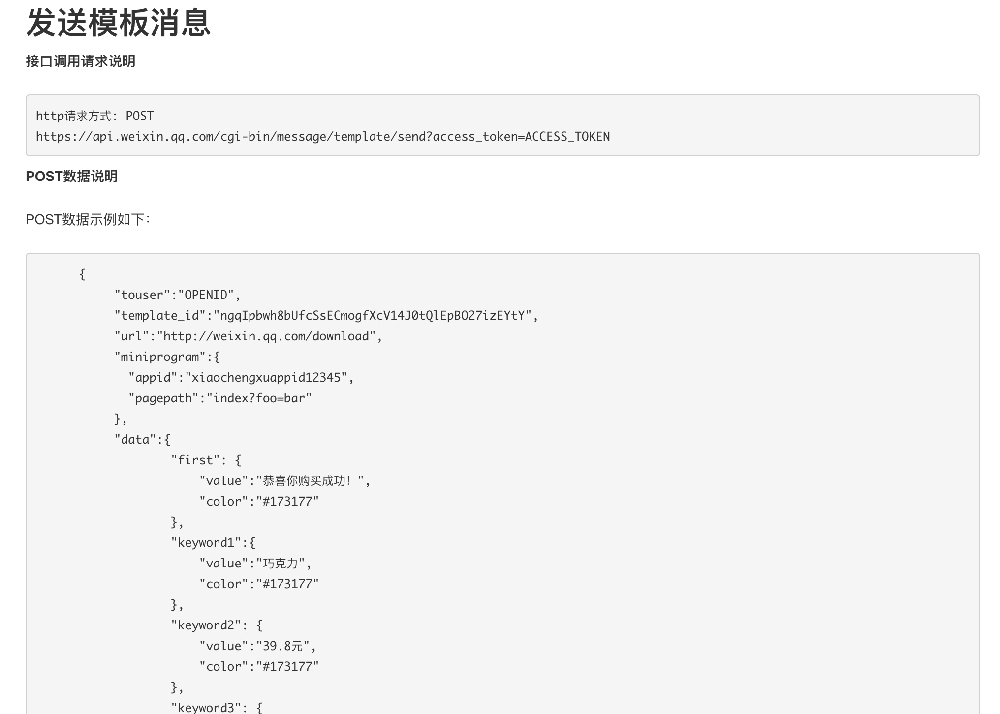
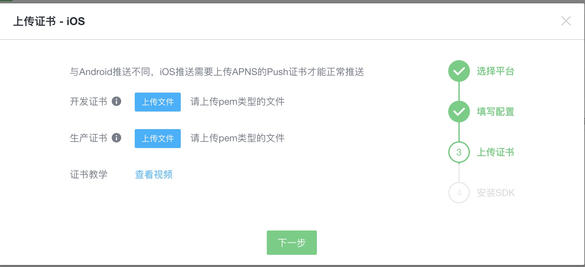

推送系统作为通用的组件，存在的价值主要有以下几点
- 会被多个业务项目使用，推送系统独立维护可降低维护成本
- 推送系统一般都是调用三方api进行推送，三方api一般会有调用频率/次数限制，被推送的消息需要走队列来合理调用三方api，控制调用的频率和次数
- 业务无关，一般推送系统设计成不需要关心业务逻辑
核心技术
- 消息队列
- 三方服务api调用
- 安卓app推送
- 苹果app推送
- 微信小程序推送
- 邮件推送
- 钉钉推送
- 短信推送
消息队列选用阿里云提供的rocketmq，官方文档：https://help.aliyun.com/document_detail/55385.html
推送时序图

右键新窗口打开可以查看高清大图
可以看到消息推送系统接入的第三方服务比较多，三方推送的质量很难统一，就需要考虑消息的推送的重试了
思路流程
为了控制并发，所有的推送都先发到rocketmq队列里，每次推送的个数通过控制队列的消费的客户端的数量来实现
安卓和苹果都可以使用信鸽的推送服务

信鸽推送需要客户端进行集成，客户端sdk参考：https://xg.qq.com/xg/ctr_index/download
目前信鸽个人开发者仍然是可以申请的，账号建立后，创建andorid和ios项目

记录下这里的 APP ID和SECRET KEY，服务端进行推送时需要这两个参数
推送异常处理，推送异常时，需要重试，重试可以利用消息队列本身的重试机制，也可以自行实现重试逻辑
安卓app推送
官方文档：https://xg.qq.com/docs/android_access/jcenter.html
代码库：https://github.com/xingePush/xinge-api-java
<!-- 信鸽推送客户端 -->
<dependency>
<groupId>com.github.xingePush</groupId>
<artifactId>xinge</artifactId>
<version>1.2.1</version>
</dependency>
核心代码如下
Map<String, Object> messagePayload = new HashMap<String, Object>(1);
messagePayload.put("user_id", 1);
messagePayload.put("msg_title", "消息标题");
messagePayload.put("msg_content", "消息内容");
messagePayload.put("msg_type", 1);
messagePayload.put("data", Lists.newHashMap("order_id", 1));
XingeApp xinge = new XingeApp(androidAccessId, androidSecretKey);
MessageAndroid message = new MessageAndroid();
ClickAction action = new ClickAction();
action.setActionType(ClickAction.TYPE_ACTIVITY);
message.setAction(action);
message.setContent(JsonUtil.toJsonString(messagePayload));
message.setType(MessageAndroid.TYPE_MESSAGE);
message.setExpireTime(86400);
message.setCustom(new HashMap<String, Object>(1));
JSONObject response = xinge.pushSingleDevice("用户的PushToken", message);
if (response.getInt(RET_CODE) != 0) {
// 推送异常了，进行日志记录等
}
苹果app推送
使用pushy库进行推送
<!-- IOS推送客户端 -->
<dependency>
<groupId>com.turo</groupId>
<artifactId>pushy</artifactId>
<version>0.13.3</version>
</dependency>
Map<String, Object> aps = new HashMap<String, Object>(1);
aps.put("alert", "推送内容");
aps.put("sound", "default");
aps.put("badge", 1);
Map<String, Object> data = new HashMap<String, Object>(1);
data.put("msgTitle", "推送标题");
data.put("msgContent", "推送内容");
data.put("msgType", "1");
data.put("userId", "13288888888");
data.put("data", Lists.newHashMap("order_id", 1));
Map<String, Object> messagePayload = new HashMap<String, Object>(1);
messagePayload.put("aps", aps);
messagePayload.put("data", data);
ApnsClient apnsClient = new ApnsClientBuilder()
.setApnsServer(ApnsClientBuilder.PRODUCTION_APNS_HOST)
.setClientCredentials(this.getClass().getClassLoader().getResourceAsStream("推送证书相对resources目录的路径"), "")
.build();
String payload = JsonUtil.toJsonString(messagePayload);
String token = TokenUtil.sanitizeTokenString("app用户的pushToken");
SimpleApnsPushNotification pushNotification = new SimpleApnsPushNotification(token, "com.suxiaolin.app1", payload);
PushNotificationFuture<SimpleApnsPushNotification, PushNotificationResponse<SimpleApnsPushNotification>>
sendNotificationFuture = apnsClient.sendNotification(pushNotification);
final PushNotificationResponse<SimpleApnsPushNotification> pushNotificationResponse =
sendNotificationFuture.get();
if (pushNotificationResponse.isAccepted()) {
System.out.println("Push notification accepted by APNs gateway.");
} else {
System.out.println("Notification rejected by the APNs gateway: " +
pushNotificationResponse.getRejectionReason());
if (pushNotificationResponse.getTokenInvalidationTimestamp() != null) {
System.out.println("\t…and the token is invalid as of " +
pushNotificationResponse.getTokenInvalidationTimestamp());
}
}
使用信鸽库进行推送
当然也可以使用信鸽提供的ios推送，逻辑和安卓app的推送差不多
ios的信鸽客户端可以和android的客户端共用，不需要引入新的jar包了
JSONObject messagePayload = new JSONObject();
Map<String, Object> custom = new HashMap<String, Object>();
messagePayload.put("title", "推送标题");
messagePayload.put("body", "推送内容");
messagePayload.put("user_id", 1);
messagePayload.put("msg_type", 1);
messagePayload.put("data", Lists.newArrayList("orderId", 1));
XingeApp xinge = new XingeApp(iosAccessId, iosSecretKey);
MessageIOS message = new MessageIOS();
message.setType(MessageIOS.TYPE_APNS_NOTIFICATION);
message.setExpireTime(86400);
message.setAlert(content);
message.setBadge(1);
message.setCategory("INVITE_CATEGORY");
message.setCustom(messagePayload);
response = xinge.pushSingleDevice("app用户的pushToken", message, XingeApp.IOSENV_PROD);
if (response.getInt(RET_CODE) != 0) {
// 推送异常了
}
小程序推送
官方文档：https://mp.weixin.qq.com/wiki?t=resource/res_main&id=mp1433751277

可以看到微信小程序推送接口是普通的post请求
小程序api地址：https://api.weixin.qq.com/cgi-bin/message/wxopen/template/send
http请求，http请求库可以参考：HttpUtil
钉钉推送
官方文档：https://open-doc.dingtalk.com/microapp/serverapi2/qf2nxq#-2
代码示例
public static boolean send(String content, String title, Set<String> receivers) {
try {
HttpUtil.ResponseWrap result = HttpUtil.postWrap(ddUrl,
"{\n"
+ " \"msgtype\": \"text\",\n"
+ " \"text\": {\"content\":\"" + title + "\r\n" + content + "\n|"
+ receivers.stream().map(r -> "@" + r).collect(Collectors.joining(" ")) + "\"},\n"
+ " \"at\": {\n"
+ " \"atMobiles\": [" + receivers.stream().map(r -> "\"" + r + "\"").collect(Collectors.joining(",")) + "], \n"
+ " \"isAtAll\": false\n"
+ " }\n"
+ " }");
return result.getStatusCode() == 200;
} catch (Exception e) {
return false;
}
}
完整代码参考 DingTalkUtil.java
使用http请求就可以请求了
邮件推送
发送邮件可以使用java的javax.mail库，smtp协议发送邮件
<dependency>
<groupId>javax.mail</groupId>
<artifactId>mail</artifactId>
<version>1.4.7</version>
</dependency>
示例代码参考：EmailSender.java
短信推送
短信服务商众多，邮件一般有统一的smtp协议可以使用，短信没有协议，但是一般使用http发送短信
比如以下的短信服务商
- 253云通讯：https://zz.253.com/api_doc/kai-fa-yin-dao.html
- 短信服务- 又拍云: https://www.upyun.com/products/sms
- 消息&短信_MSGSMS_云通信_短信- 华为云: https://www.huaweicloud.com/product/msgsms.html
消息队列的特性
消息队列消费异常后会自动进行重试
一些注意的点
微信小程序每次支付可以生成一个推送码，需要保存到数据库或者缓存里，并且每个码只能推送3条消息
因为消息队列的消费在消息量大的时候具有一定的延时，这就为取消消息推送提供了可能，可以为每条消息生成一个唯一的uuid，取消的时候把这个uuid设计进redis里，推送时检查这个uuid是否在redis里决定推送与否
虽然推送存在不可控制的异常，比如三方推送服务出现了异常，但是也存在调用方传递参数异常，可以推送接口调用的返回值判断是否调用推送系统成功，也可以记录到日志里，这样在调查异常原因时就比较容易
消息队列默认的重试次数，消费时长是无法控制的，可以对消息队列的客户端进行修改支持这个特性，参考：https://github.com/jibaole/spring-boot-starter-alimq/pull/6/files
核心逻辑是先给消息设置一个最大消费次数和消费时长，然后当消息消费次数和消费时长达到阈值时，直接置为成功
ios使用信鸽推送时，需要上传开发证书和生产证书，这两个证书至少需要上传一个
